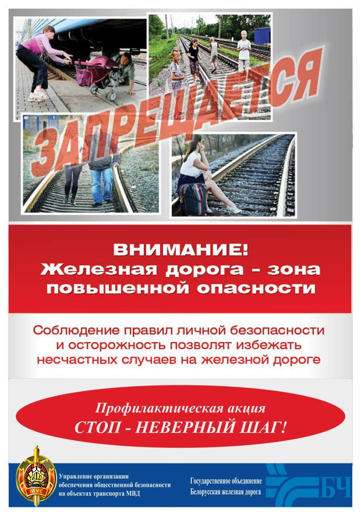

25 августа ГАИ проводит Единый день безопасности дорожного движения под названием «Внимание родители – закончились каникулы!»


Детский травматизм и его предупреждение – очень важная и серьезная проблема. С начала текущего года на дорогах Гомельской области уменьшилось количество автоаварий (с 31 до 30; -1) и погибших (с 4 до 1; -3) в них несовершеннолетних. Однако, возросло количество травмированных в них детей (с 33 до 36; +3)
Несмотря на большое разнообразие травм у детей, причины, вызывающие их, типичны. Прежде всего, это не благоустроенность внешней среды, халатность, недосмотр взрослых, неосторожное, неправильное поведение ребенка на дороге, в том числе во время игр на улице. Возникновению травм способствуют и психологические особенности детей: любознательность, большая подвижность, эмоциональность, недостаток жизненного опыта, а отсюда – отсутствие чувства опасности. Поэтому одна из основных задач родителей и взрослых в целом – предупреждение детского травматизма.
Главная причина, из-за которой дети попадают под машину из-за отсутствия главного транспортного навыка: предвидение скрытой опасности. Устранить эту причину, ограничиваясь только беседами с детьми, словесными наставлениями, невозможно. При движении на дороге, как и при любом движении, действуют не столько знания, сколько привычки, стереотипы. Выработать их можно только в реальных условиях улицы. Вот почему каждый выход с родителями ребенка на улицу должен способствовать формированию у него навыков наблюдения, самоконтроля, ориентирования в дорожно-транспортной ситуации, формированию навыка безопасного поведения на улицах и дорогах, являющегося основой выполнения Правил дорожного движения.
Важно чтобы родители были примером для детей в соблюдении правил дорожного движения:
- Не спешите, переходите дорогу размеренным шагом.
- Переходите дорогу только в местах, обозначенных дорожными знаками и разметкой.
- Выходя на проезжую часть дороги, прекратите разговаривать — ребёнок должен привыкнуть, что при переходе дороги нужно сосредоточиться.
- Не переходите дорогу на красный или жёлтый сигнал светофора.
- Из автобуса, троллейбуса, трамвая, такси выходите первыми. В противном случае ребёнок может упасть или побежать на проезжую часть дороги.
- Привлекайте ребёнка к участию в ваших наблюдениях за обстановкой на дороге: показывайте ему те машины, которые готовятся поворачивать, едут с большой скоростью и т.д.
- Не выходите с ребёнком из-за машины, кустов, не осмотрев предварительно дороги, ‑ это типичная ошибка, и нельзя допускать, чтобы дети её повторяли.
- Не разрешайте детям играть вблизи дорог и на проезжей части улицы.
Что касается велосипедного травматизма: каждый родитель, прежде чем купить своему ребенку велосипед, должен обучить ребенка Правилам безопасного поведения на дороге при управлении велосипедом. Никто не может заменить родителей при обучении ребенка дисциплинированному поведению на дороге, соблюдению им правил безопасности.
Вы должны объяснить своему ребенку основные правила:
– кататься на велосипедах безопаснее всего во дворах, в жилой зоне, на стадионах и специально отведенных местах, где невозможного появление транспортных средств;
‑ запрещено двигаться на велосипеде, не держась за руль и (или) не держа ноги на педалях;
– ездить необходимо по специальным велосипедным дорожкам, а если их нет – по тротуарам, не мешая пешеходам;
– проезжая часть дороги – не место для езды на велосипеде;
– выезжать на велосипеде на проезжую часть дороги, в случае необходимости, разрешено только детям, достигшим 14 лет;
‑ при пересечении проезжей части дороги по пешеходному переходу велосипедистам разрешено не спешиваться с велосипеда, однако необходимо знать, что непосредственно при подъезде к пешеходному переходу велосипедист должен снизить скорость движения и, убедившись, что выезд на проезжую часть дороги безопасен, пересекать ее со скоростью идущего шагом пешехода;
‑ при движении по дороге в темное время суток и (или) в условиях плохой видимости на велосипеде должны быть включены: спереди — фара (фонарь), излучающая белый свет, сзади — фонарь, излучающий красный свет, сам велосипедист должен быть в одежде со световозвращающими элементами;
– необходимо обязательно пользоваться средствами защиты: шлемом, наколенниками, налокотниками, накладками на запястье, а также в темное время суток повязками, поясами, жилетами со световозвращающими элементами.
Далее, водители, осуществляющие перевозку детей в своих транспортных средствах также должны помнить, что судьбу ребенка в аварийной ситуации определяет ТО, КАК он сидит в автомобиле. Ведь зачастую можно наблюдать, как ребенок даже не сидит, а стоит за спиной у папы-водителя или мамы-пассажира, а может и наоборот, или между двух передних кресел автомобиля. В таком положении малышу открывается великолепный вид через лобовое стекло и одновременно заканчивается его безопасность.
Согласно п. 178 Правил дорожного движения перевозка детей в легковом автомобиле, оборудованном ремнями безопасности, должна осуществляться с использованием:
‑ детских удерживающих устройств, соответствующих весу и росту ребенка, – в возрасте до пяти лет;
‑ детских удерживающих устройств, соответствующих весу и росту ребенка, иных средств (бустеров, специальных подушек для сидения, дополнительных сидений), позволяющих безопасно пристегнуть ребенка с помощью ремней безопасности, предусмотренных конструкцией транспортного средства, – в возрасте от пяти до двенадцати лет.
Так же запрещена перевозка детей до двенадцати лет на заднем сиденье мотоцикла, мопеда.
Допускается перевозить детей в возрасте до двенадцати лет без использования детских удерживающих устройств, если рост ребенка превышает 150 сантиметров, а также в автомобиле-такси.
Дети-водители – отдельная категория несовершеннолетних, которые входят в особую группу риска. Задача родителей – объяснить детям, что ни в коем случае нельзя садиться за руль ради развлечения, не имея права управлять транспортным средством.
Родители должны знать и понимать, что обучать управлению механическим транспортным средством в индивидуальном порядке разрешается только на площадках или автодромах, закрытых для дорожного движения, при этом обучающий должен иметь водительское удостоверение и стаж управления транспортным средством не менее двух лет. Кроме того, само транспортное средство должно быть соответствующим образом оборудовано. В противном случае человек будет привлечен к ответственности.
Особою озабоченность вызывают ДТП, в результате которых различные травмы получают несовершеннолетние водители, так как в большинстве случаев ответственность за них несут взрослые, которые не осуществляют должный контроль за подростками, которые имеют доступ к управлению транспортными средствами, при этом не имеют водительского удостоверения соответствующей категории.
Напоминаем, что участвовать в дорожном движении на мопеде (скутере) разрешается c 16-летнего возраста ТОЛЬКО при наличии водительского удостоверения! Как получить? Будущий водитель может самостоятельно изучить ПДД, пройти медицинское освидетельствование – получить медицинскую справку, и по достижении 16 лет сдать теоретический экзамен в ГАИ. После успешной сдачи от получит водительское удостоверение на управление мопеда (скутера) категории «АМ».
Родители! Будьте внимательны к своим несовершеннолетним детям! Вы должны знать, где находится Ваш ребенок и чем он занимается. Чаще проводите с ними беседы о правилах поведения на дороге и вблизи нее. Объясняйте, какую угрозу несет за собой проезжая часть.
Современные средства персональной мобильности
В последнее время участники дорожного движения стали активно использовать современные средства персональной мобильности. К средствам персональной мобильности относят: электросамокаты, электроскейтборды, гироскутеры, сигвеи, моноколеса и иные аналогичные средства передвижения.
Использование данных гаджетов на дорогах общего пользования становится серьезным источником повышенной опасности, как для пешеходов, так и для лиц, управляющих такими устройствами. Важно отметить, что такой «транспорт» может развивать значительную скорость, что при ограниченной маневренности создает высокую вероятность потери управления. При этом многие пользователи устройств, выезжая на дорогу, не используют защитную экипировку, чем подвергают свою жизнь опасности. С 27 октября прошлого года они уже стали полноправными участниками дорожного движения и официально приравнены к пешеходам.
Для обеспечения безопасности при передвижении на средствах персональной мобильности рекомендуем соблюдать следующие правила:
- выезжать на гаджете на проезжую часть дороги, в случае необходимости, разрешено только детям, достигшим 14 лет;
- двигаться необходимо по велосипедным дорожкам, а при их отсутствии – по тротуарам, пешеходной дорожке или обочине, не создавая препятствий для движения других пешеходов;
- перед пересечением проезжей части по пешеходному переходу необходимо остановиться, убедиться что выход (выезд) на дорогу безопасен и только после этого пересекать проезжую часть со скоростью идущего шагом пешехода;
- передвигаться необходимо со скоростью, которая позволит в случае возникновения препятствия на пути безопасно остановиться, не прибегая к экстренному торможению, при этом скорость не должна превышать 25 км/ч;
- необходимо крепко держатся за руль (при его наличии);
- нельзя перевозить других лиц вне специально оборудованных мест для сидения, предусмотренной конструкцией гаджета;
- во время движения нельзя отвлекаться на телефонные разговоры или просмотр сообщений на экране телефона, необходимо постоянно контролировать ситуацию вокруг себя, соблюдать безопасную дистанцию до других участников движения;
- заметив поблизости детей, снижайте скорость и будьте готовы к резкой смене движения маленьких пешеходов, которые обычно отличаются высокой подвижностью и непредсказуемостью;
- проезжая возле выходов из подземных переходов, торговых объектов, крытых остановок общественного транспорта, снижайте скорость и будьте готовы к внезапному появлению людей;
- в темное время суток и при недостаточной видимости необходимо обозначить себя световозвращающими элементами, а на средстве персональной мобильности должна быть установлена фара (фонарь), позволяющая своевременно обнаружить препятствие для дорожного движения;
- используйте шлем и иную защитную экипировку;
- запрещено управлять средствами персональной мобильности в состоянии опьянения или при плохом самочувствии.
Не зная правил безопасного поведения на улице, дети подвергают свою жизнь и здоровье опасности, забывая о том, что, участвуя в процессе дорожного движения, они должны соблюдать Правила дорожного движения и ни в коем случае не создавать аварийно-опасных ситуаций на дороге.
Уважаемые родители, покупая ребенку средство персональной мобильности, важно понимать, что это не игрушка! Поэтому, объясняйте детям основные правила безопасного поведения на улице во время катания. Помните, что неукоснительное их соблюдение – это залог сохранения жизни и здоровья ваших детей!
В ОСТАЛЬНОМ ЖЕ, ВСЕМ ВЗРОСЛЫМ, А ОСОБЕННО РОДИТЕЛЯМ, ЛИЧНЫМ ПРИМЕРОМ НУЖНО ПОКАЗЫВАТЬ, КАК ПРАВИЛЬНО ВЕСТИ СЕБЯ НА ДОРОГЕ. В ОБЯЗАТЕЛЬНОМ ПОРЯДКЕ РАССКАЗЫВАТЬ О ТОМ, ЧТО НЕПОЗВОЛИТЕЛЬНО САДИТЬСЯ ЗА РУЛЬ ТРАНСПОРТНОГО СРЕДСТВА, НЕ ИМЕЯ НА ТО ПРАВА, НЕ ГОВОРЯ УЖЕ ОБ УПРАВЛЕНИИ ТРАНСПОРТНЫМ СРЕДСТВОМ В СОСТОЯНИИ ОПЬЯНЕНИЯ!
КРОМЕ ТОГО, БЕЗУСЛОВНЫМ АВТОРИТЕТОМ ДЛЯ ДЕТЕЙ ВСЕГДА ЯВЛЯЮТСЯ РОДИТЕЛИ! ПОЭТОМУ, НЕ ПОЗВОЛЯЙТЕ СЕБЕ НАРУШАТЬ ПДД, ОСОБЕННО В ПРИСУТСТВИИ ДЕТЕЙ. ОБУЧАЙТЕ, ПОКАЗЫВАЙТЕ, РАССКАЗЫВАЙТЕ, ПРИВОДИТЕ ПРИМЕРЫ ИЗ ЛИЧНОГО ОПЫТА, ТЕМ БОЛЕЕ ЧТО В НЫНЕШНИЙ ВЕК ТЕХНОЛОГИЙ В ПОМОЩЬ РОДИТЕЛЯМ ЕСТЬ МНОГО СПЕЦИАЛЬНЫХ ОБУЧАЮЩИХ ПРОГРАММ ПРАВИЛАМ ПОВЕДЕНИЯ НА ДОРОГЕ.
УГАИ МОБ УВД ГОМЕЛЬСКОГО ОБЛИСПОЛКОМА


«Пристегни себя и своих пассажиров!»
28 июля 2023 года в Республике Беларусь проводится Единый день безопасности дорожного движения под девизом «Пристегни себя и своих пассажиров!», направленный на пропаганду использования средств пассивной безопасности (ремни, детские удерживающие устройства, шлемы).
За 6 месяцев текущего года на дорогах Гомельской области зарегистрировано 163 дорожно-транспортных происшествий, в которых 21 человек погиб и 183 ‑ с травмами различной степени тяжести были госпитализированы. А ведь цифры статистики погибших и раненых в ДТП людей могли бы быть значительно меньше, если бы все, без исключения не пренебрегали Правилами дорожного движения в общем и не отказывались от использования ремней безопасности и специальных удерживающих устройств при перевозке маленьких пассажиров в частности, отправляясь в поездки даже на короткие расстояния.
А именно использование ремней безопасности – это самый простой способ улучшить свою безопасность в любом транспортном средстве, и неважно, водитель вы или пассажир. В противном случае это в буквальном смысле слова станет вопросом жизни и смерти.
Именно ремни безопасности несут ответственность за тысячи жизней путём удерживания пассажиров в наиболее безопасном положении – на своем месте. Эти средства защиты сделаны из специального материала, отличительными характеристиками которого является прочность и возможность так растягиваться, чтобы уменьшить энергию от внезапного столкновения, сглаживая эффект удара. Можно подумать, что с существованием других автомобильных мер безопасности ремни уже устарели. Но доказано, что они по-прежнему выполняют наиболее важную роль в защищённости в транспортных средствах. На самом деле, в то время как подушки безопасности повышают эффективность ремней на целых 40%, сами по себе они не так эффективны.
На самом деле, что же происходит с сидящим в автомобиле, если он попадает в ДТП? Что же угрожает жизни и здоровью людей, находящихся в салоне автомобиля в момент совершения ДТП? Какова же эффективность ремней безопасности?
Как показывают наблюдения специалистов ‑ под действием силы инерции люди, перемещаясь, ударяются о различные предметы интерьера, выбрасываются через лобовое стекло, ударяются друг о друга. Именно в этот момент они, в основном и получают травмы. Поэтому роль и значение ремней безопасности в предотвращении передвижения человека внутри автомобиля во время его столкновения неоспоримо велика. Главное в этом случае удержать человека на месте и тем самым уберечь его от травм или, в определенной степени, уменьшить их тяжесть.
Применение ремней безопасности во время движения может спасти вашу жизнь, но только в том случае, если вы пользуетесь ими должным образом. Как же правильно пристёгиваться? Ремень должен идти через плечо, не под рукой, и он должен быть максимально удобен для вашего тела. Если во время ДТП плечевой ремень был пристёгнут неправильно, это может привести к травме рёбер, гематомам или ранам ваших внутренних органов. Поясной ремень должен лежать низко над бёдрами, а не на животе.
Кроме того, важно помнить, что использование ремней безопасности обязательно как на передних, так и на задних сиденьях всех транспортных средств, оборудованных ими.
Немаловажной в легковом автомобиле является перевозка самых главных пассажиров – детей – она должна быть безопасной!!!
Помните, что согласно пункту 178 Правил дорожного движения, перевозка детей в легковом автомобиле, оборудованном ремнями безопасности, осуществляется с использованием:
- детских удерживающих устройств, соответствующих весу и росту ребенка, – в возрасте до 5 лет;
- детских удерживающих устройств, соответствующих весу и росту ребенка, иных средств (бустеров, специальных подушек для сидения, дополнительных сидений), позволяющих безопасно пристегнуть ребенка с помощью ремней безопасности, предусмотренных конструкцией транспортного средства, – в возрасте от 5 до 12 лет.
Допускается перевозить детей в возрасте до 12 лет без использования детских удерживающих устройств, если рост ребенка превышает 150 сантиметров, а также в автомобиле-такси.
Запрещается перевозка детей на переднем сиденье легкового автомобиля с использованием детских удерживающих устройств, соответствующих весу и росту ребенка, спинка которых развернута к лобовому стеклу транспортного средства, если переднее сиденье имеет подушку безопасности, за исключением случая, когда механизм фронтальной подушки безопасности отключен.
Запрещается перевозка детей до 12 лет на заднем сиденье мотоцикла, мопеда.
Запрещено также при перевозке держать детей на руках, так как при столкновении, например, на скорости 40 км/ч ребенок весом 5,5 кг оказывает нагрузку на руки держащего, равноценную 110 кг. Удержать такой вес, особенно женщинам, вряд ли удастся. А самых маленьких детей – малышей в возрасте до 18 месяцев безопаснее всего перевозить в детском сиденье, установленном сзади спинкой вперед. Так при столкновении обеспечивается хорошая защита затылка и спины. Кроме того, детские сиденья для детей весом 9-18 кг должны оборудоваться ремнями с пятью точками крепления. Такая схема позволяет распределить ударную нагрузку при столкновении по большей поверхности тела ребенка, чем снижается вероятность получения тяжелых травм.
Не стоит забывать и об основных правилах эксплуатации детских удерживающих устройств:
- для обеспечения безопасности при перевозке детей, а также в процессе установки и использования удерживающих устройств следуйте заводской инструкции;
- каждый ребенок должен быть обеспечен своим удерживающим устройством (устройства, рассчитанные на двоих детей одновременно, не производятся);
- проверяйте крепление устройства к автомобилю перед каждой поездкой, даже если в нем нет маленького пассажира, - незакрепленное кресло представляет серьезную опасность;
- обязательно используйте удерживающие устройства и пристегивайте детей ремнями безопасности, независимо от продолжительности поездки;
- при применении штатных ремней безопасности для фиксации детей старше 3-4 лет следите, чтобы они охватывали туловище через плечо и в районе пояса;
- если вес и размеры ребенка превысили допустимую величину – замените специализированное устройство на другое или подгоните универсальное под необходимые размеры.
Водителю, в автомобиле которого находится ребенок, необходимо быть максимально сосредоточенным и не совершать необдуманных поступков за рулем. Поймите, зачастую, судьбу ребенка в аварийной ситуации определяет то, как он сидит в автомобиле. Ведь он пассажир и подвергается такой же или даже большей опасности, чем взрослые, так как его организм ещё достаточно хрупок.
Да, порой, дети не любят сидеть в своих автомобильных сидениях, когда они маленькие, поэтому поощряйте своих детей, чтобы они использовали детский ремень безопасности. Покажите им, что мама и папа пристёгиваются сами, поэтому они должны делать то же самое. Будьте примером для подражания!
Периодически возникает вопрос, так кто должен быть пристегнут при движении в транспортном средстве?!
Согласно пункту 9.5 ПДД, допускается не пристегиваться ремнем безопасности только:
‑ лицам, обучающим управлению механическим транспортным средством, когда им управляет ученик (сам он должен быть пристегнут);
‑ пассажирам автомобиля оперативного назначения;
‑ водителям машины-такси при движении в населенном пункте во время перевозки пассажира;
‑ пассажирам и водителям с медицинскими противопоказаниями, перечень которых определяется Министерством здравоохранения.
В иных случаях, при управлении транспортным средством водителем, не пристегнутым ремнем безопасности, а также при перевозке пассажиров, не пристегнутых ремнями безопасности, если конструкцией транспортного средства предусмотрены ремни безопасности, а равно управление мотоциклом, мопедом либо перевозка на них пассажиров без мотошлемов или с незастегнутыми мотошлемами наступает административная ответственность согласно действующего законодательства в виде наложения штрафа в размере до 1 базовой величины. При повторном нарушении вышеуказанных норм в течение года штраф составит от 2 до 5 базовых величин.
За неиспользование детского удерживающего устройства в случаях, когда оно обязательно, предусмотрена административная ответственность в виде наложения штрафа в размере до 4 базовых величин. В случае неиспользования детского удерживающего устройства повторно в течение одного года, после наложения административного взыскания, водитель может быть привлечен к административной ответственности в виде штрафа в размере от 2 до 8 базовых величин.
Уважаемые водители! Не позволяйте себе или тем, кто оказался рядом с вами в автомобиле, стать ещё одной единицей в печальной статистике ДТП. Пристёгивайтесь и напоминайте об этом своим друзьям, даже если вы просто переезжаете из одной стоянки на другую. Сохраните здоровье и жизнь свою и ваших близких!
УГАИ УВД Гомельского облисполкома
Железная дорога-зона повышенной опасности!
Железная дорога всегда считалась местом повышенной опасности, и неумение правильно вести себя в зоне железнодорожных путей, желание сократить путь, излишняя поспешность, невнимательность при переходе железнодорожных путей, нахождение и игра детей вблизи идущего поезда зачастую приводят к трагическим последствиям.
Так, в 2022 году в результате несчастных случаев на железнодорожных объектах Гомельской области пострадало 8 человек. Из числа пострадавших 5 человек погибло, 3 получили травмы различной степени тяжести.
Сотрудники ООПП Железнодорожного РОВД напоминают гражданам следующие правила безопасного поведения на объектах железнодорожного транспорта:
-не переходите через железнодорожные пути в неустановленных местах, не перебегайте перед проходящим поездом, помните, что поезд сразу остановить нельзя;
согласно ч.4 ст.18.2 КоАП Республики Беларусь проход по железнодорожным путям или нахождение на железнодорожных путях в местах, не предназначенных для их пересечения, влекут наложение штрафа в размере до двух базовых величин.
-не ходите по железнодорожным путям – это опасно для жизни;
-не выходите на междупутье сразу после проследования поезда, убедитесь в отсутствии поезда встречного направления;
-не пытайтесь переехать железнодорожный переезд на запрещающий сигнал светофора, независимо от положения и наличия шлагбаума;
-не влезайте на крыши вагонов поездов во избежание поражения электрическим током – напряжение переменного тока контактной сети более 27 000 вольт;
-не подлезайте под пассажирские платформы,вагоны железнодорожных составов и не перелазьте через автосцепки для прохода через путь;
-не подкладывайте на рельсы посторонние предметы, это может нарушить движение поездов;
подкладывание на железнодорожные пути посторонних предметов влечет наложение штрафа в размере от 2 до 10 БВ (ч.1 ст.18.2 КоАП Республики Беларусь), повреждение железнодорожных путей, защитных лесонасаждений, путевых объектов влечет наложение штрафа в размере от 20 до 50 БВ (ч.2 ст.18.2 КоАП Республики Беларусь). Уголовная ответственность вплоть до лишения свободы на срок до 10 лет предусмотрена ст.309 УК Республики Беларусь за умышленное приведение в негодность путей сообщения и ст.310 УК Республики Беларусь за умышленное блокирование транспортных коммуникаций. При этом, блокировка железнодорожных путей может рассматриваться как диверсия (ст.360 УК Республики Беларусь) либо акт терроризма (ст.289 УК Республики Беларусь), за совершение которых предусмотрено наказание в виде лишения свободы на срок до 15 лет.
-категорически запрещается находиться на территориях станций, остановочных пунктов и иных объектах транспорта в состоянии алкогольного опьянения;
-во время нахождения на железной дороге не пользуйтесь наушниками, они отвлекают внимание и притупляют чувство опасности, особенно это касается несовершеннолетних граждан;
-обнаружив бесхозные вещи, в т.ч. сумки, коробки и другие подозрительные предметы, незамедлительно сообщите об этом сотрудникам милиции или работникам железнодорожного транспорта.
Как отметил заместитель начальника Железнодорожного РОВД-начальник МОБ подполковник милиции Степаненко В.А., каждый гражданин, находящийся на железной дороге, должен помнить о своей безопасности и защитить себя иребенка, соблюдать основные правила нахождения на пути. Помните, что железная дорога не место для игр, а зона повышенной опасности, где цена невнимательности - Ваша жизнь и здоровье!
ООПП МОБ Железнодорожного РОВД

